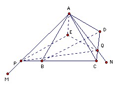

Let ABCD be a regular tetrahedron. Let M be a point in the plane ABC and N a point different from M in the plane ADC. Show that the segments MN, BN and MD can be used to form a triangle.
Solution
Let AM meet BC at P and let AN meet CD at Q. Rotate A about PQ to get E where AE = AB. We claim that EMN is the required triangle. It is sufficient to show that EM = MD and EN = BN.
Let h be the distance of A from the plane BCD. Then the distance of A from the line PQ is at least h, so the point E exists provided that the side length is at most 2h. That is certainly true (in fact it is √(3/2) h).
We have AD = AE and EP = AP by construction. Also because P lies on the line BC, we have PA = PD. Hence PA = PA, PD = PE, AD = AE, so PAD and PAE are congruent. Hence E can also be obtained by rotating D about AP. Since M lies on AP, it follows that EM = DM.
Repeating the argument with B and D interchanged and M and N interchanged we get that EN = BN.


© John Scholes
jscholes@kalva.demon.co.uk
7 July 2003
Last corrected/updated 7 Jul 2003